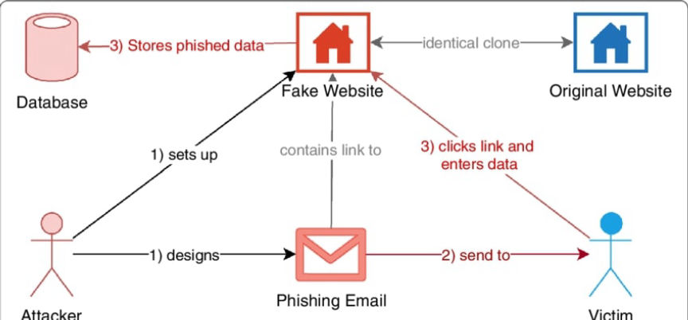
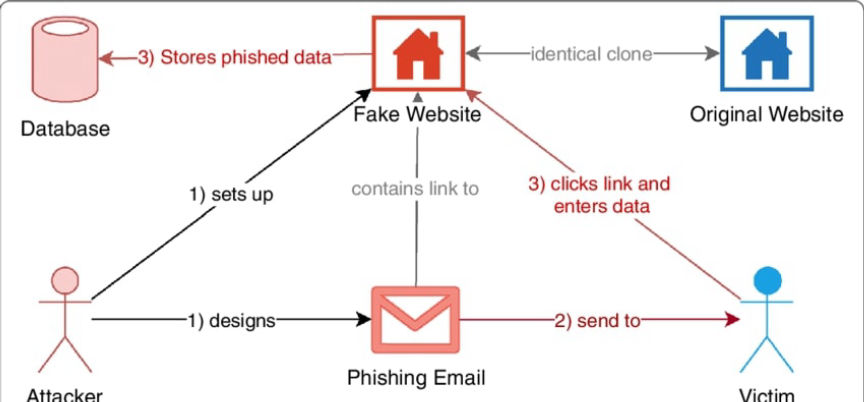

Phishing Attacks Explained
Phishing attacks are a type of cybercrime in which attackers use fraudulent websites or emails to trick victims into giving sensitive information, such as passwords or financial data. These attacks often appear to come from legitimate sources, such as banks or other reputable organizations and can be difficult for even the most cautious individuals to detect.

The goal of a phishing attack is to steal sensitive information or infect a victim's computer with malware. In some cases, attackers may use the stolen information to gain access to accounts, such as online banking or social media accounts, and steal money or personal information. In other cases, they may use the information to gain access to corporate networks and steal sensitive data or disrupt operations. Some attackers may even sell the stolen information on the dark web.
One common technique used by attackers is to create a fake website that looks identical to a legitimate one, such as a bank's website. They may then send out emails or messages to potential victims, claiming that there is a problem with their account and directing them to the fake website to enter their login credentials. Once the victim enters their information, the attacker has access to their account.
Another common tactic is to send out emails or messages claiming to be from a legitimate organization, such as a bank or government agency. These messages may contain a link that, when clicked, takes the victim to a fake website where they are prompted to enter their sensitive information. In some cases, the messages may contain attachments that, when opened, infect the victims' devices with malware.
The attackers may also create fake social media accounts that mimic those of legitimate organizations. The attackers then wait for the clients of the real brand to contact them for help. When contacted the attacker may ask the customer to provide personal information to be used in resolving the complaint. The attacker may also give the customer a link to a malicious customer support page where the customer's information is stolen.
In other cases cybercriminals make phone calls to their targets pretending to be from legitimate organizations. In the phone calls, the attackers persuade or scare their victims into taking certain actions. On following the instructions given by the attackers the victims either disclose sensitive information or install malware into their devices.
Learn how to identify phishing attacks. In most cases, phishing attacks are characterized by;
By taking these steps, you can better protect yourself from the dangers of phishing attacks.

The goal of a phishing attack is to steal sensitive information or infect a victim's computer with malware. In some cases, attackers may use the stolen information to gain access to accounts, such as online banking or social media accounts, and steal money or personal information. In other cases, they may use the information to gain access to corporate networks and steal sensitive data or disrupt operations. Some attackers may even sell the stolen information on the dark web.
How Cybercriminals Carry Out Phishing Attacks
One common technique used by attackers is to create a fake website that looks identical to a legitimate one, such as a bank's website. They may then send out emails or messages to potential victims, claiming that there is a problem with their account and directing them to the fake website to enter their login credentials. Once the victim enters their information, the attacker has access to their account.
Another common tactic is to send out emails or messages claiming to be from a legitimate organization, such as a bank or government agency. These messages may contain a link that, when clicked, takes the victim to a fake website where they are prompted to enter their sensitive information. In some cases, the messages may contain attachments that, when opened, infect the victims' devices with malware.
The attackers may also create fake social media accounts that mimic those of legitimate organizations. The attackers then wait for the clients of the real brand to contact them for help. When contacted the attacker may ask the customer to provide personal information to be used in resolving the complaint. The attacker may also give the customer a link to a malicious customer support page where the customer's information is stolen.
In other cases cybercriminals make phone calls to their targets pretending to be from legitimate organizations. In the phone calls, the attackers persuade or scare their victims into taking certain actions. On following the instructions given by the attackers the victims either disclose sensitive information or install malware into their devices.
How to Prevent Phishing Attacks
Learn how to identify phishing attacks. In most cases, phishing attacks are characterized by;
- Threats and a sense of urgency- The attackers instill fear and encourage their victims to take immediate action without carrying out due diligence.
- Making suspicious requests- The attackers may ask you to do something that a legitimate brand would never ask you to do. An attacker imitating your crypto wallet provider may ask you to update your seed phrase because the current one is about to expire. The attacker would then lead you to a site where you would be asked to enter your current seed phrase.
- Use of suspicious web addresses- Attackers use email addresses and domain names that look like those of legitimate organizations. An example is if the email is made to look like one sent by Bank of America, but from a Gmail account and not the domain bankofamerica.com.
- Do not open attachments sent from unknown sources.
- Hover over links before clicking them. This will help you know the real destinations of the links.
- Regularly update your security software to protect yourself from malware attacks.
- Implement security measures such as two-factor authentication to increase the security of your accounts.
- Never use the same login credentials on more than one site.
- Do not type URLs directly, to avoid making errors that may lead you to a phishing site. Bookmark or search and navigate to the websites you want to access.
By taking these steps, you can better protect yourself from the dangers of phishing attacks.